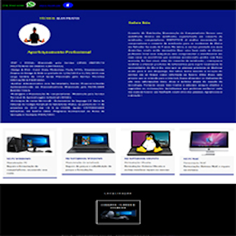
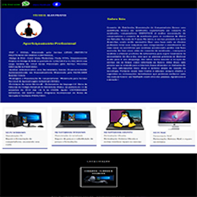

HTML5
 CSS
CSS
 JavaScript
JavaScript
PHP
Cursando Técnico em informática IFBA
Perfil Profissional:
O técnico em Informática, enquanto agente de sua própria história e com sua formação técnica, utilizando-se dos conhecimentos adquiridos deverá enfrentar e superar os desafios da vida e com sua formação liderar, respeitando a participação coletiva. Construindo espaços democráticos, gerenciar e capacitar equipes com desempenho inerentes à função. Com uma forte formação ética, criativa, humanística, técnica, solidária e crítica, devendo ser um sujeito autônomo, responsável, investigador e com capacidade para compreender o significado das ciências, das artes, das linguagens e das tecnologias específicas, desenvolvendo atividades na área da tecnologia da informação e comunicação, trabalhando sempre de forma integrada, sendo um instrumento de transformação da realidade.
Campo de atuação:
Instalação e configuração de recursos de software; Planejamento, dimensionamento e administração de computadores em rede; Planejamento, organização e diagramação de páginas Web; Planejamento, dimensionamento e inter-operacionalização de estruturas de Banco de Dados; Planejamento, análise e projeto de sistemas e programas de computador; Planejamento e operacionalização de processos voltados para qualidade. Análise de projetos pertinentes à área de Informática. Gerenciamento, administração e alocação de recursos na implementação de projetos e sistemas informatizados.
Projetos:

 
